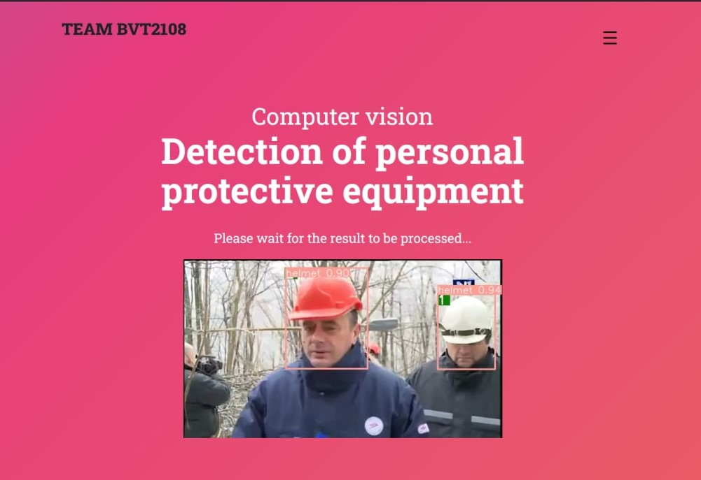
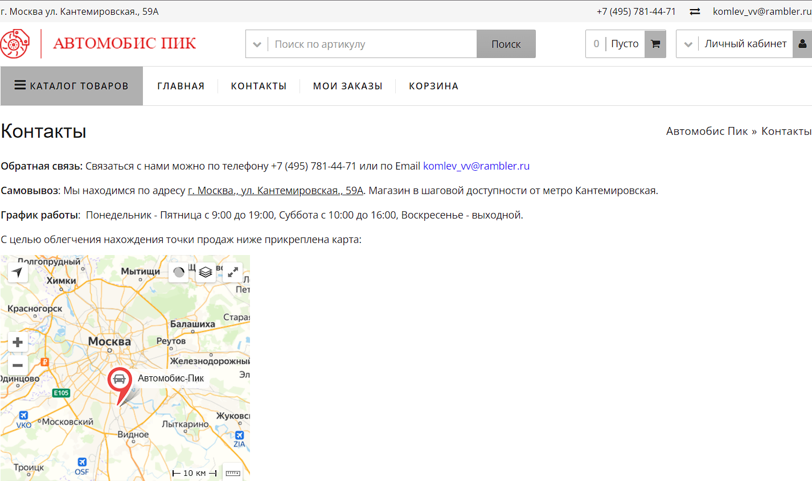
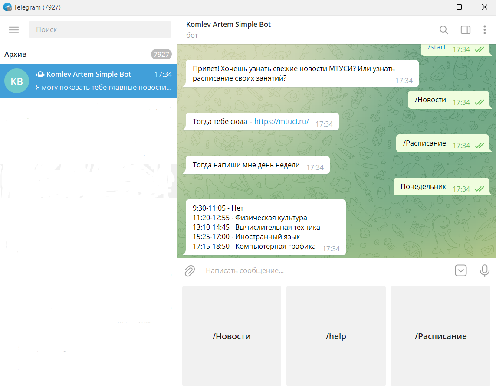

A web-app based on a neural network model for object detection and tracking
The project is a web-application based on the Flask framework. It is based on the YOLOv5 neural network model, trained to detect personal protective equipment (helmets, glasses, gloves and their absence). Deepsort and GStreamer are used to read and output streaming video. In addition, all tracking statistics are collected in the PostgreSQL database.
Follow link GitHub

Website of the online car parts store
The website of the online car parts store, written in the CMS of the DocParts company. The project uses HTML, CSS, JavaScript, PHP. On the website there is an opportunity to view the catalog of products, place an order, write a request for feedback.
Follow link Automobis-Pik

Komlev Artem Simple Telegram Bot
Telegram bot written in python. The standard pyTelegramBotAPI library is used. The bot executes standard commands and has navigation. Designed to present the student schedule and news of the Institute. Very easy to implement.
Follow link GitHub